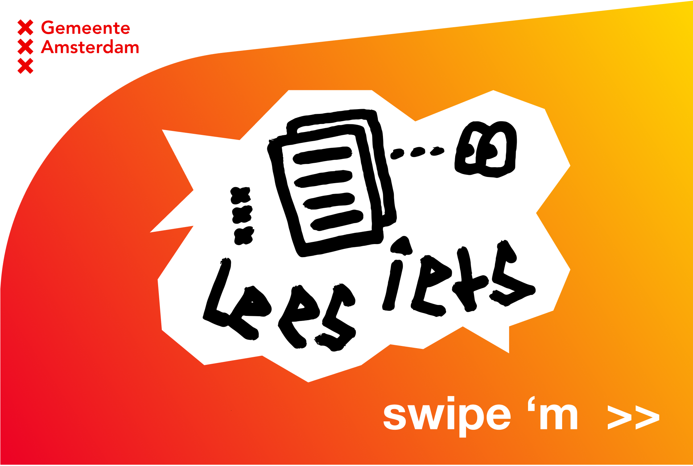

-
Slamjam.com
Frontend Development
-


-
Voor dit project heb ik de homepage en productpagina van de webshop Slamjam.com visueel nagebouwd met HTML, CSS en JavaScript code. Tijdens het project heb ik uitgebreid gewerkt met grid en flexbox om de structuur na te bootsen en heb ik geleerd hoe ik horizontaal scrollbare secties kan maken. Dit gaf me nieuwe inzichten in het ontwerpen van dynamische en functionele layouts.
-
Om de website beter af te stemmen op gebruikers met verschillende wensen, heb ik interactieve functies toegevoegd. Denk aan een dark/light mode, een optie om tekstgrootte aan te passen, en audio-feedback voor acties. Deze elementen maken de site toegankelijker en gebruiksvriendelijker voor een breed publiek.
CMD Projecten

-
Boekenkiezer
Visual Interface Design
- 
-
Ik heb schermontwerpen gemaakt voor een Boekenkiezer die jongeren in Amsterdamse bibliotheken moest aanspreken om meer te gaan lezen. De functionaliteiten omvatten het zoeken en filteren van boeken en het verzenden van reserveringen via e-mail. Het ontwerp is bewust modern en eenvoudig gehouden, zonder kinderlijk of speels over te komen, met een herkenbare Tone of Voice die aansluit bij de doelgroep.
-
Voor het ontwerp heb ik contrasten gebruikt, zoals zwart-witte content in combinatie met een felgekleurde gradiënt in de voortgangsbalk. Rauwe, zelfgemaakte illustraties zorgen voor visueel contrast met strakke, ronde vormen en soepele kleurovergangen. Het resultaat is een aantrekkelijk en functioneel ontwerp dat jongeren stimuleert om de Boekenkiezer te gebruiken en meer te lezen.
-
Portfolio
Kijk eens rond!
-
Hier kun je zelf ervaren hoe ik werk en wat mijn stijl is. Door rond te kijken en interactief te navigeren, ontdek je mijn vaardigheden, projecten en ontwerpproces. Test het zelf en krijg een duidelijk beeld van mijn manier van denken en creëren.
-
Hou 'm in de gaten!